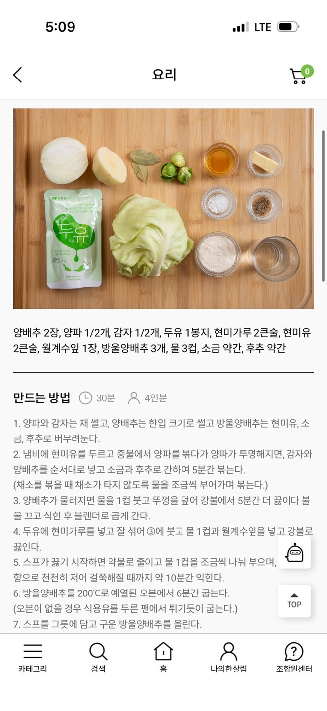

양배추스프
먼저 텍스트 레시피를 읽고, 마지막에 영상/블로그/이미지를 확인하세요.
재료
- 양배추 2장
- 양파 1/2개
- 감자 1/2개
- 두유 1봉지
- 현미가루 2큰술
- 현미유 2큰술
- 월계수잎 1장
- 방울양배추 3개
- 물 3컵
- 소금 약간
- 후추 약간
조리과정
- 양파와 감자는 채 썰고, 양배추는 한입 크기로 썰고 방울양배추는 현미유, 소 금, 후추로 버무려둔다.
- 냄비에 현미유를 두르고 중불에서 양파를 볶다가 양파가 투명해지면, 감자와 양배추를 순서대로 넣고 소금과 후추로 간하여 5분간 볶는다.
- 양배추가 물러지면 물을 1컵 붓고 뚜껑을 덮어 강불에서 5분간 더 끓이다 불 을 끄고 식힌 후 블렌더로 곱게 간다.
- 두유에 현미가루를 넣고 잘 섞어 ③에 붓고 물 1컵과 월계수잎을 넣고 강불로 끓인다.
- 스프가 끓기 시작하면 약불로 줄이고 물 1컵을 조금씩 나눠 부으며, 향으로 천천히 저어 걸쭉해질 때까지 약 10분간 익힌다.
- 방울양배추를 200°C로 예열된 오븐에서 6분간 굽는다.
- 스프를 그릇에 담고 구운 방울양배추를 올린다.
이미지
